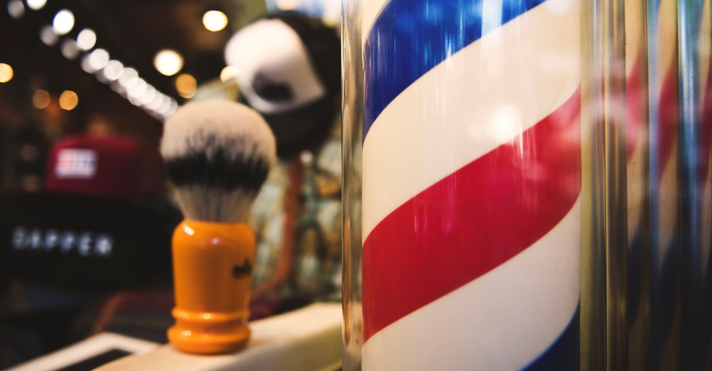

普段からお世話になっている散髪屋に向かう。
木のぬくもりが漂う二席しかない店内。都会の一角にありながらも、ちょっとした秘密基地のような空間が心地よくて、気づけばもう十年近く通っている。すっかり店の常連客だ。
目の前に広げられている色とりどりの雑誌。最新のヘアスタイルを紹介するものや、洒落たファッション誌、人気の観光雑誌なんかがバランスよく揃えられている。面白そうだな、と思うものもあったりするが実際に手に取ることはなく表紙だけを眺める。
なぜなら僕の髪を熟知する、十歳ほど年上の美容師との会話にいつも夢中になるから。寡黙な雰囲気を放つ彼だが、話してみると感性が似ていて気づいたら色々な話をしてしまう。一人っ子の僕にとって、まるで兄弟みたいに話をしてくれる彼はとても貴重な存在だ。
「実は来月、店を移転するんだよね」
小刻みにハサミを動かしながら髪を切る彼は何となしにそう言う。どうやら店が入っている建物の老朽化により移転を決めたようだ。新しい場所を聞いてみると、遠くに移ることでもなかったので少し安心する。
「でも、ちょっと寂しいですね。僕はこの場所も含めて、このお店が好きですから」
そう素直に言うと、鏡越しに彼は小さく微笑む。「店を愛してくれてありがとう」そんな意味が込められているのかな、とその時勝手に思った。
彼とその奥さんが営んできた散髪屋のちょっとした転換点。慣れ親しんだ街の風景もこうして姿を変えていく。
そして、たとえ移転先がどこになっても、変えたくない散髪屋との繋がり。新しい店構えを一足早く想像して、次回の予約をさせてもらった。